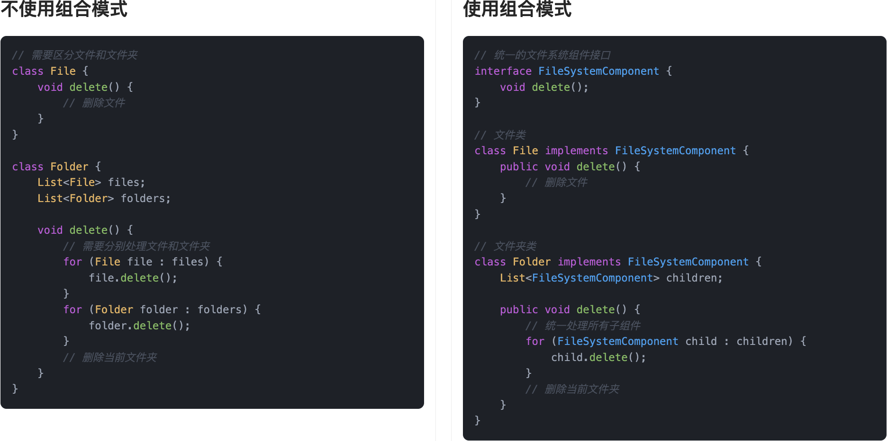
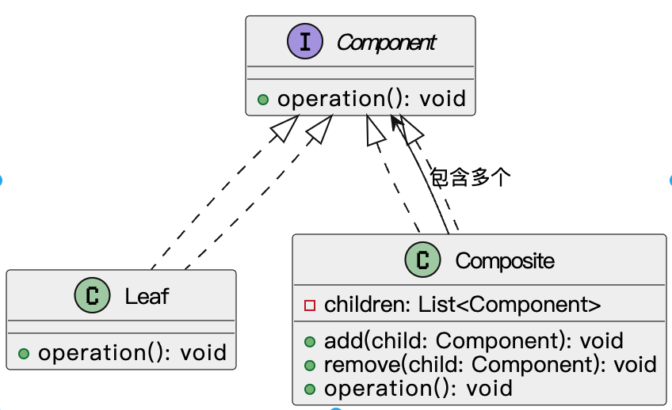
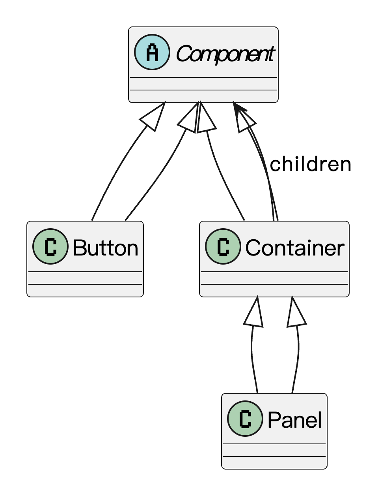

什么是组合模式？
组合模式（Composite Pattern）是一种结构型设计模式，它是一种让我们可以用统一的方式来处理单个对象和一组对象的设计思路。它的核心思想就是：无论是一个元素，还是一组元素，我都用同一套接口、一致的方式去操作，不用每次都写一堆 if 判断去区分“你到底是个体还是整体”。
在开发中，我们经常会碰到“部分-整体”的结构，比如文件系统：一个文件夹里可以放文件，也可以放文件夹，后者又可以继续嵌套文件……这时候如果每种情况都单独处理，会导致代码不够优雅。组合模式就让你像处理一个单独文件那样处理整个文件夹，递归也轻松搞定。
举个例子，我们都搬过家吧，需要整理一大堆打包好的箱子。每个箱子里可能直接装着物品，比如一本书、一只杯子，也可能是一个更小的箱子，里面再装别的东西。
最后你看着这些大箱子、小箱子，其实根本不用关心“它到底是单个物品，还是一堆东西的集合”，因为你对它们的处理方式是一样的——拿起来、贴个标签、装上车。这个过程中，你对“单件”和“组合”的操作方式是完全一致的。

通俗点说，它就是帮我们把“单个”和“多个”的操作方式统一起来，让代码更简洁、更优雅，扩展也方便。
为什么要使用组合模式？
系统开发中，随着功能的不断扩展，对象之间的关系往往变得复杂，有时候单个对象也能完成事情，有时候又需要一组对象配合才能完成。如果我们在代码里频繁去判断是单个对象还是一组对象，不仅逻辑繁琐，还容易出错。组合模式通过统一接口，把这两种情况统一起来，大大简化了客户端代码，让整体结构更加清晰，扩展起来也更加自然顺手。尤其是在涉及树形结构、递归处理的场景下，组合模式能帮我们优雅地管理这些复杂的对象关系。
为了让大家更好地感受到组合模式的作用，以文件系统管理为例，我们需要管理文件和文件夹的层级结构。让我们来看看使用和不使用组合模式的区别：

通过对比可以看出，不使用组合模式时，我们需要分别处理文件和文件夹两种不同的类型，这导致了代码的重复和复杂度的增加。每当需要添加新的操作时，都需要在文件和文件夹类中分别实现，而且客户端需要区分处理不同类型的节点。
而使用组合模式后，我们通过统一的接口将文件和文件夹抽象为相同的组件，使得客户端可以用一致的方式处理所有节点。这种设计不仅简化了代码结构，还提高了系统的可扩展性。当需要添加新的操作时，只需要在接口中定义并在各个实现类中实现即可，无需修改客户端代码。
组合模式的应用场景
举一些开发中典型的应用场景：
- 文件系统管理：在一个文件管理系统中，文件和文件夹可以构成树形结构，文件夹可以包含多个文件或其他文件夹。组合模式可以将文件和文件夹抽象成统一的接口，使得在操作文件夹和文件时，可以使用相同的方法。比如，用户想删除一个文件夹，无论该文件夹中包含的是文件还是子文件夹，操作方式都是一样的。
- 企业组织结构：在处理企业的组织结构时，可以将公司、部门、员工等抽象为组件。公司是一个组合对象，包含多个部门；部门可以包含多个员工。组合模式允许我们将公司、部门和员工看作一个统一的接口，方便在遍历和操作整个组织结构时使用相同的方式，无论操作的是公司、部门还是单个员工。
- 菜单管理系统：在一个菜单管理系统中，菜单项可以是简单的单项（如一个按钮或链接）或者是复杂的菜单（如包含多个子菜单项的下拉菜单）。组合模式可以将菜单项和菜单容器统一处理，使得无论是普通菜单项还是包含子菜单的复合菜单，都能以相同的方式进行渲染、更新或删除。这样在实现菜单功能时，可以灵活地添加或修改菜单层级结构。
组合模式的基本结构
组合模式具有的角色和职责：
1）抽象组件（Component）：定义了所有组件（包括基本组件和容器组件）必须遵循的接口，比如公共的方法，比如添加、删除、获取子组件等。
2）叶子节点（Leaf）：代表最基本的、不能再分的对象，比如普通员工。叶子节点实现了抽象组件定义的接口，但不会再包含子节点。
3）容器节点（Composite）：代表可以包含子组件的对象，比如部门经理。容器节点同样实现了抽象组件接口，同时内部维护着子节点集合，并实现对子节点的添加、删除等操作。
下面用一张类图帮大家更直观地理解组合模式的结构：

组合模式的实现
下面就以 “文件系统管理” 为例，我们用组合模式实现一个简单的文件结构系统。
1）定义统一的文件组件接口：声明操作方法，比如显示信息
public interface FileComponent {
void display(String indent);
}
这一步定义了组合模式的“抽象组件”，统一所有文件系统节点的操作接口，比如 display() 方法用于展示目录结构。
2）实现叶子节点类：表示文件
public class FileLeaf implements FileComponent {
private String name;
public FileLeaf(String name) {
this.name = name;
}
public void display(String indent) {
System.out.println(indent + "- 文件：" + name);
}
}
FileLeaf 是叶子节点类，代表文件，不包含其他子节点，只负责输出自己的名字，是组合结构中最底层的节点。
3）实现组合节点类：表示文件夹
import java.util.ArrayList;
import java.util.List;
public class FolderComposite implements FileComponent {
private String name;
private List<FileComponent> children = new ArrayList<>();
public FolderComposite(String name) {
this.name = name;
}
public void add(FileComponent component) {
children.add(component);
}
public void remove(FileComponent component) {
children.remove(component);
}
public void display(String indent) {
System.out.println(indent + "+ 文件夹：" + name);
for (FileComponent child : children) {
child.display(indent + " ");
}
}
}
FolderComposite 是组合节点，代表文件夹，可以包含任意数量的子文件或子文件夹，实现递归遍历并展示结构，是组合模式的核心。
4）客户端调用示例：构建并展示一个文件树结构
public class FileSystemClient {
public static void main(String[] args) {
// 创建文件
FileLeaf file1 = new FileLeaf("readme.txt");
FileLeaf file2 = new FileLeaf("logo.png");
FileLeaf file3 = new FileLeaf("data.csv");
// 创建文件夹
FolderComposite root = new FolderComposite("根目录");
FolderComposite docs = new FolderComposite("文档");
FolderComposite images = new FolderComposite("图片");
// 构建层级关系
docs.add(file1);
images.add(file2);
root.add(docs);
root.add(images);
root.add(file3);
// 显示结构
root.display("");
}
}
输出结果：
+ 文件夹：根目录
+ 文件夹：文档
- 文件：readme.txt
+ 文件夹：图片
- 文件：logo.png
- 文件：data.csv
客户端不需要关心节点到底是文件还是文件夹，只调用 display() 方法即可，组合模式让“整体”和“部分”拥有一致的操作方式，实现了对复杂结构的透明访问。
组合模式的优缺点
优点
- 树形结构的表示：组合模式能够将对象组织成树形结构，适用于表示“部分-整体”的层次结构，如文件系统、组织结构等。
- 统一性：客户端可以统一处理单个对象和对象集合，简化了代码的复杂性。在操作时无需区分复合对象与叶子节点，可以统一使用相同的接口进行操作。
- 扩展性：通过递归方式，容易为树形结构添加新的操作或新类型的对象，无需修改已有代码即可实现新功能。
- 灵活性：组合模式使得对象的组合和解组合更加灵活，组合结构可以按需变化。
缺点
- 过度泛化：组合模式可能会导致设计过于泛化，叶子节点和复合节点使用统一接口，可能会引起不必要的复杂性。如果不加区分，复合节点和叶子节点的功能可能会被过度简化，导致某些操作不符合实际需求。
- 不适合复杂对象：如果对象层次过于复杂，组合模式可能会导致大量的类和接口，增加系统的复杂性，降低维护性。
- 难以控制部分操作：当组合对象非常复杂时，处理某些特定的部分操作可能会变得困难，因为无法简单区分叶子节点和复合节点的行为。
扩展知识 - 源码分析
开源框架中的应用
1、JDK
其在 JDK 中，java.awt.Component 体系就是组合模式的体现。
在 AWT 的 UI 组件系统中，Component 是所有组件的父类，而 Container 是一种特殊的 Component，它可以嵌套别的 Component。
public abstract class Component implements ImageObserver, MenuContainer,
Serializable{
// 所有 UI 组件的基类
}
public class Button extends Component implements Accessible {
// 叶子节点，没有子组件
}
public class Panel extends Container implements Accessible {
// 树枝节点，可以容纳别的 Component
}
而 Container 是可以添加子组件的：
public class Container extends Component {
private List<Component> componentList = new ArrayList<>();
public Component add(Component comp) {
addImpl(comp, null, -1);
return comp;
}
}
这就形成了一个组合结构，Component 是统一接口，Button 是叶子节点，Panel 是组合节点，可以包含多个 Component。可以看下类图：

2、Spring 框架
Spring Web MVC 中就大量使用了组合模式，其中几个非常典型的类包括：
HandlerMethodArgumentResolverCompositeHandlerMethodReturnValueHandlerCompositeHandlerExceptionResolverCompositeViewResolverComposite
我们以 HandlerMethodArgumentResolverComposite 为例来分析，这个类是 Spring MVC 在方法参数解析时用的组合容器。
先看下这个类的部分源码结构：
public class HandlerMethodArgumentResolverComposite implements HandlerMethodArgumentResolver {
// 用于存储注册的参数解析器列表
private final List<HandlerMethodArgumentResolver> argumentResolvers = new ArrayList<>();
// 用于缓存已经解析过的参数对应的解析器，提高性能（此处未显示定义，实际源码中为 Map 缓存）
private final Map<MethodParameter, HandlerMethodArgumentResolver> argumentResolverCache =
new ConcurrentHashMap<>(256);
//添加一个参数解析器到组合中
public HandlerMethodArgumentResolverComposite addResolver(HandlerMethodArgumentResolver resolver) {
this.argumentResolvers.add(resolver);
return this;
}
// 判断是否支持解析某个方法参数
@Override
public boolean supportsParameter(MethodParameter parameter) {
return getArgumentResolver(parameter) != null;
}
// 根据参数查找支持该参数的解析器，并使用缓存提升性能
@Nullable
private HandlerMethodArgumentResolver getArgumentResolver(MethodParameter parameter) {
HandlerMethodArgumentResolver result = this.argumentResolverCache.get(parameter);
if (result == null) {
for (HandlerMethodArgumentResolver resolver : this.argumentResolvers) {
if (resolver.supportsParameter(parameter)) {
result = resolver;
this.argumentResolverCache.put(parameter, result);
break;
}
}
}
return result;
}
// 调用支持该参数的解析器进行参数解析
public Object resolveArgument(MethodParameter parameter, @Nullable ModelAndViewContainer mavContainer,
NativeWebRequest webRequest, @Nullable WebDataBinderFactory binderFactory) throws Exception {
HandlerMethodArgumentResolver resolver = getArgumentResolver(parameter);
if (resolver == null) {
throw new IllegalArgumentException("Unsupported parameter type [" +
parameter.getParameterType().getName() + "]. supportsParameter should be called first.");
}
return resolver.resolveArgument(parameter, mavContainer, webRequest, binderFactory);
}
}
可以看到，它本身实现了 HandlerMethodArgumentResolver 接口，但它内部是组合了一堆 HandlerMethodArgumentResolver 实例。
也就是说，从客户端的角度来看，无论是使用一个解析器，还是一组解析器，使用方式完全一样。这就是组合模式的精髓。
其他类似的组合器还有：
1）HandlerMethodReturnValueHandlerComposite
2）HandlerExceptionResolverComposite
3）ViewResolverComposite
这些类的结构和思路都很接近，都是：自己实现接口，内部持有多个实现实例，统一代理转发调用。
优势和作用
通过上述的源码分析，我们可以再次总结下组合模式的作用。
1、统一处理逻辑，简化调用
组合模式可以让我们对“一个对象”还是“一组对象”进行统一处理，省去了调用方的条件判断和分支逻辑。比如参数解析器，我们不需要管到底是哪个解析器支持，组合器会统一负责找合适的。
2、扩展性强，插件式开发友好
每个子解析器（HandlerMethodArgumentResolver 实现类）都可以独立实现，互不干扰，添加新的处理器只需要注册到组合器中，不用改原有逻辑。
3、层级嵌套灵活，天然适合处理树形结构
像菜单、目录、组件树等天然结构，都适合用组合模式建模，结构清晰、功能解耦，容易维护。
相关面试题
可以在 程序员面试刷题神器 - 面试鸭 上获取到企业常问的设计模式面试题。比如：